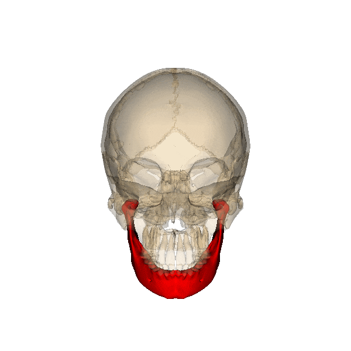

El hueso más grande y fuerte de la cara. Forma la parte inferior de la quijada y una porción de la boca. La mandíbula es el único hueso de la cabeza que se mueve.
Generalidades
En él se encuentran los dientes inferiores. Fija los músculos de la masticación y de otros movimientos de la boca
Función
Se compone de 2 eminencias, una anterior denominada apófisis coronoides (dónde se inserta el músculo temporal) y una posterior llamada cóndilo mandibular (que se articula con la cavidad glenoidea y forma la articulación temporomandibular) separados por la escotadura sigmoidea (por donde pasan los nervios maseterinos).